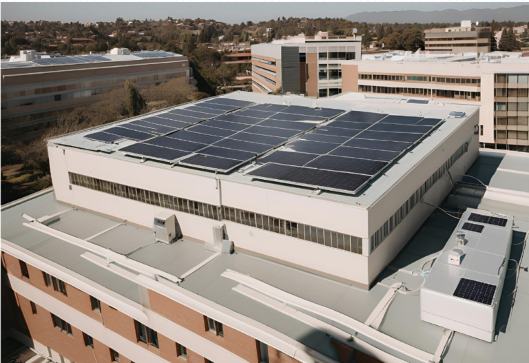

Nuevo proyecto en paneles solares en hospitales.
Iniciamos un programa de apoyo a hospitales con energía sostenible. Instalamos paneles solares que garantizan suministro eléctrico en zonas críticas, reduciendo costos y mejorando la atención médica. Este proyecto contribuye a disminuir la huella ambiental y asegurar energía estable en momentos vitales.
